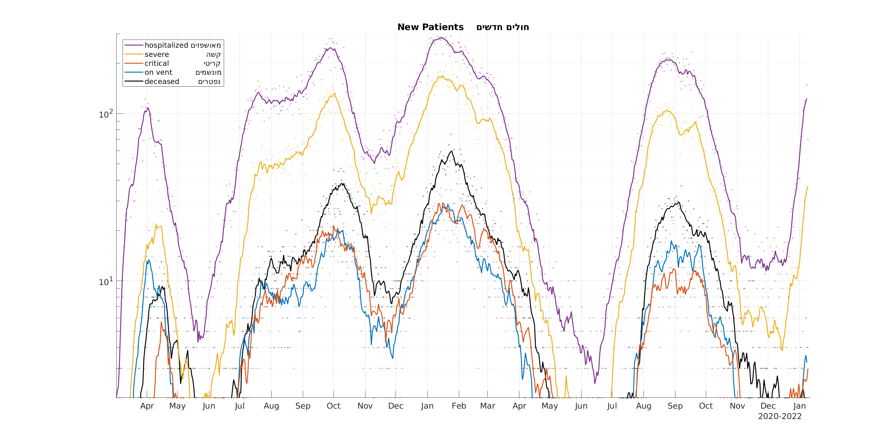
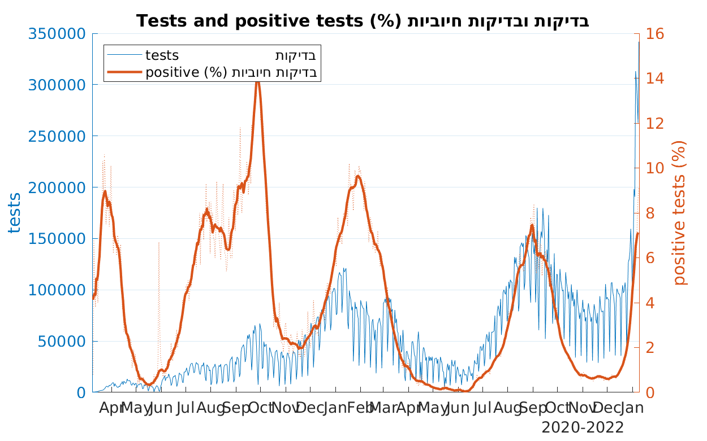

מצב חולי הקורונה בישראל, 06.08.2020
כמה חולים במצב קשה, מונשמים ומתים מקורונה בכל יום
מצב המונשמים - (בחמשת הימים האחרונים) כל יום יש כ 2 מונשמים יותר
מצב התמותה - (בחמשת הימים האחרונים) כ 10 נפטרים ליום

מימין גרף מוחלק הסוכם את כל המאושפזים. משמאל אותם הנתונים ללא החלקה, מוצגים עבור כל קבוצה בנפרד, חוץ מחולים קשים הכוללים את המונשמים
אחוז הבדיקות החיוביות
תשובה חיובית התקבלה עבור 5.8% מהתוצאות היומיות
עקומות תמותה מיושרות לפי היום שבה התמותה החלה
השוואה בין ישראל לשאר המדינות הסובלות מקורונה זמן רב מישראל. יום האפס של כל מדינה הוא היום שבו עברה המדינה את הרף של מת אחד למליון. מדינות ששמן רשום מעל ישראל שולטות פחות במצב